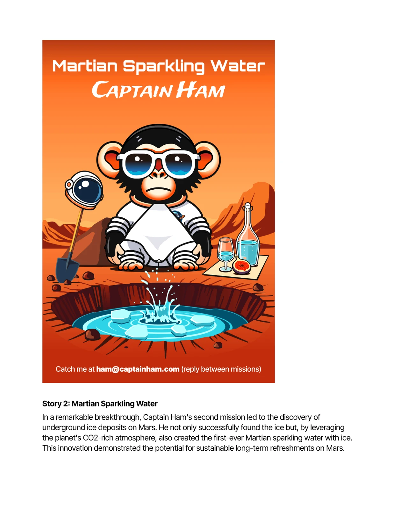
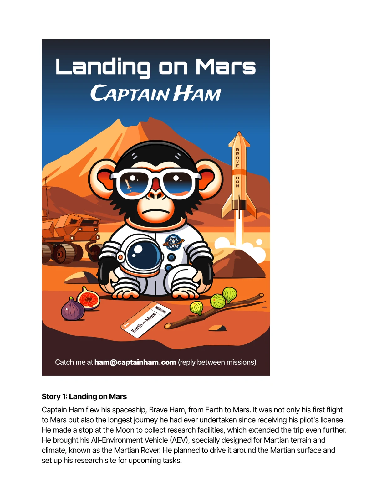
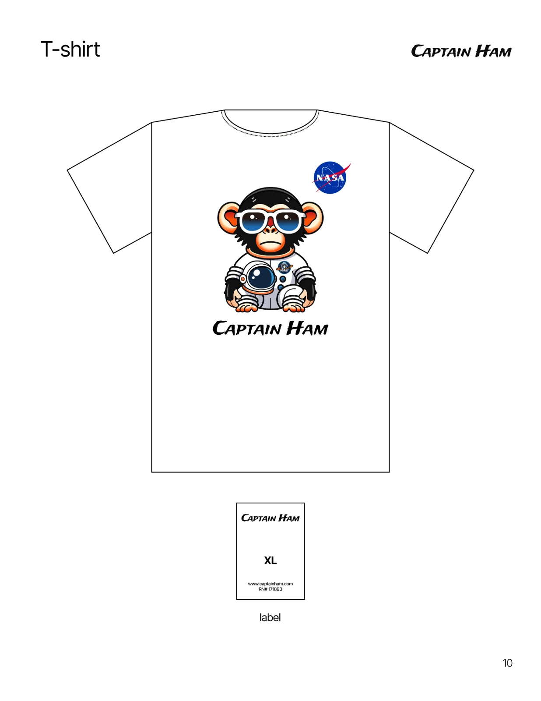

好奇心是出发点
Captain Ham 以太空猩猩为主角，将探索未知的想象组织成角色故事、网站与日常物件。太空不是遥远的背景，也是幽默与好奇心发生的地方。

Captain Ham 以太空猩猩为主角，将探索未知的想象组织成角色故事、网站与日常物件。太空不是遥远的背景，也是幽默与好奇心发生的地方。
Landing on Mars 与 Martian Sparkling Water 是角色世界中的两个叙事主题：一个关于抵达，一个把火星与日常饮品的想象连接起来。它们属于虚构的角色故事。


角色从网页走向海报与服装等载体，让同一段故事在浏览、穿戴与收藏中获得不同的表达方式。